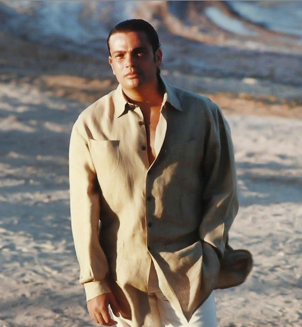
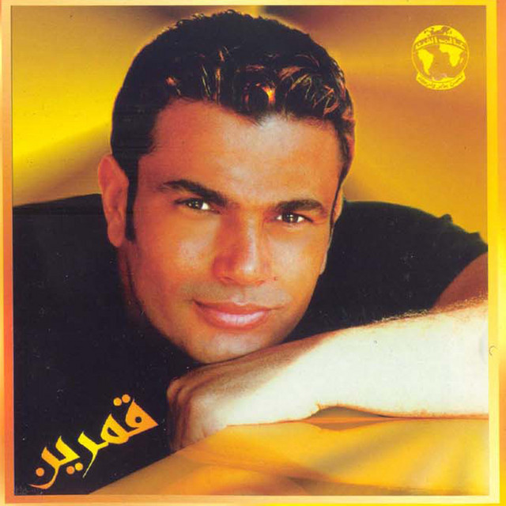
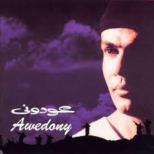
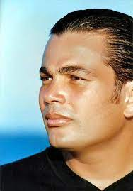
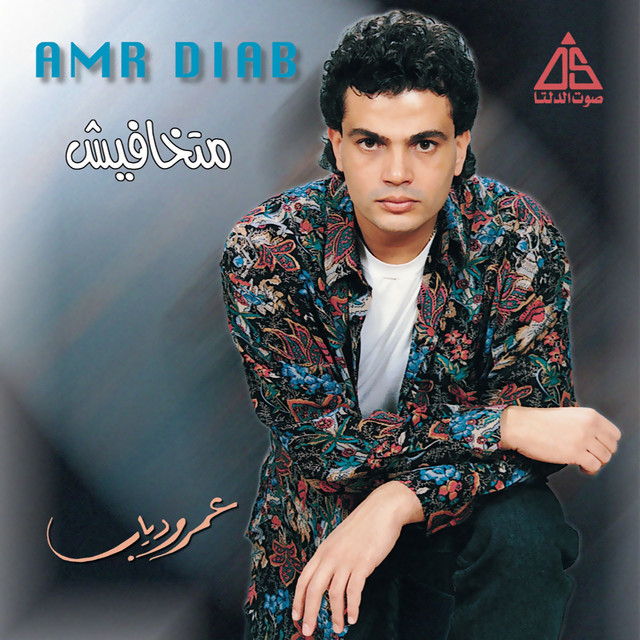
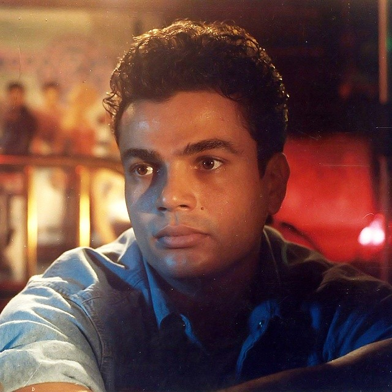
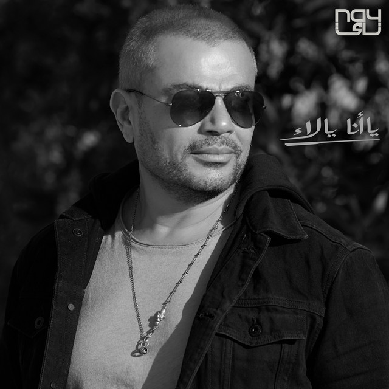

00.00.0000
AMR DIAB
About
AMR DIAB is a famous Egyptian singer, composer, and actor. He has established himself as a globally acclaimed recording artist and author. He is a Guinness World Record holder, the best selling Middle Eastern artist, a seven-times winner of World Music Awards and five-times winner of Platinum Records.
He was born on 11 October 1961 in Port Said to a middle-class family from the Egyptian country side of Menia Elamh, in Sharqia Governorate, Egypt. Diab graduated with a bachelor's degree in Music from the Cairo Academy of Arts in 1986.
Legacy






Nour Elein
Nour Elein is Amr Diab's most successful song. It was released in January 1996 and became a tremendous success not only in the Middle East but worldwide.
Amarein
Amarain also often Amarein is a 1999 album by Amr Diab that contains his international hit "Amarain" of the same name.
Awedony
Awedony also often Awedoony is a 1998 album by Amr Diab that contains his international hit "Awedony" of the same name.
Dehket Oyoun Habibi
Dehket Oyoun Habiby was released in 1993. It is considered one of his best songs.
Matkhafeesh
Matkhafeesh was released in 1990.
Rageen
Rageen was released in 1995. A very well known song even nowadays.
Latest Album

YA ANA YA LAA Listen
- Ya Ana Ya La
- Mahsoud
- Shokran
- Ayez Aamel Zayak
- Tabl
- Bethazr
- Fakerny Ya Hob
- Wana Maak
- Ya Dalaao
- Min El Aasham
Official Webpage
Visit Amr Diab's official Website